Оберіть декоративний об’єкт у сцені та перейдіть у вкладку Модель.
Перевірте розмір у метрах поруч із орієнтиром людини 1,75 м. Оберіть масштаб, старіння або деталізацію.
Створіть попередній перегляд. Порівняйте з оригіналом, а тоді збережіть варіант або скасуйте.
Для граней і форми відкрийте ProBuilder; для кольорів і деформації — Polybrush. Працюйте з копією та перед збереженням оберіть саме її геометрію.
Розріз автоматично закриває опуклі моделі. Порожнисті будівлі та літак потребують ручної роботи з оболонкою. Спрощення захищає межі, тому кількість полігонів може залишитися більшою за цільову. Докладніше про інструменти, джерела та перевірки.
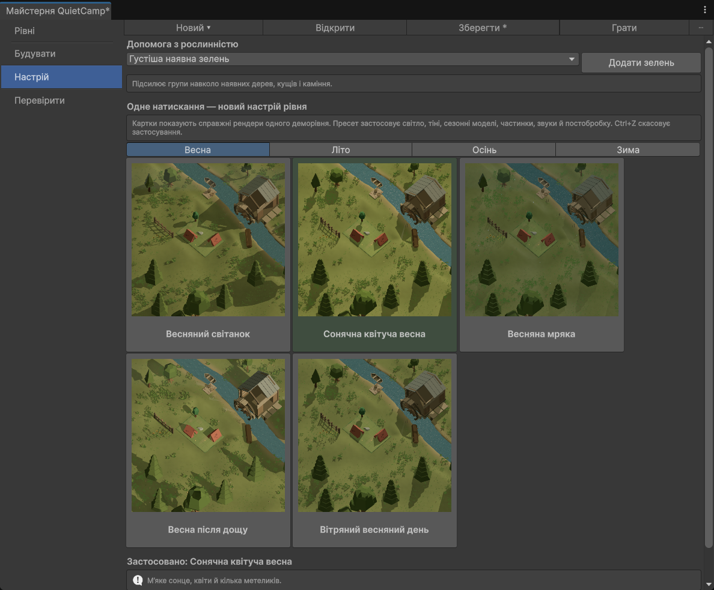
Виберіть помічника зі списку й натисніть «Додати зелень»; сезон застосовується натисканням картки.
Спрощена майстерня та сезонні пресети
Чотири розділи: Рівні → Будувати → Настрій → Перевірити. Усередині «Будувати» перемикайте поле, об’єкти та землю. Гості й геометрія — у «Додатково»; допомога та експорт — у меню ⋯.
Галерея 20 сезонних пресетів із реальними кадрами Unity. У «Настрій» натисніть квадратну картку: світло, тіні, рослини, погода, постпроцес і звуки застосуються разом. Тут є п’ять помічників зелені, які доповнюють наявну композицію.
Усі 100 карток кампанії відкривають зафіксовані редаговані чернетки. Подальші скриншоти показують ті самі інструменти до спрощення навігації; актуальна панель показана у сезонній галереї.
01
Почніть з простого
У Unity відкрийте Quiet Camp → Майстерня рівнів. Закріпіть вікно поруч із Scene View: у майстерні обираєте інструмент, у сцені розміщуєте деталі.
Порожнє поле
Для власного пазла з нуля. Почніть із розміру й двох гостей.
Згенерувати основу
Готовий табір, який можна змінити вручну. Номер варіанта задає початкову заготовку.
Наявний рівень
Найпростіший спосіб навчитися. Відкрийте знайомий пазл і змініть кілька деталей.
Перший маршрут: відкрийте рівень → поставте один декоративний об’єкт → збережіть чернетку → натисніть «Грати».
02
Відкрийте рівень, який уже є
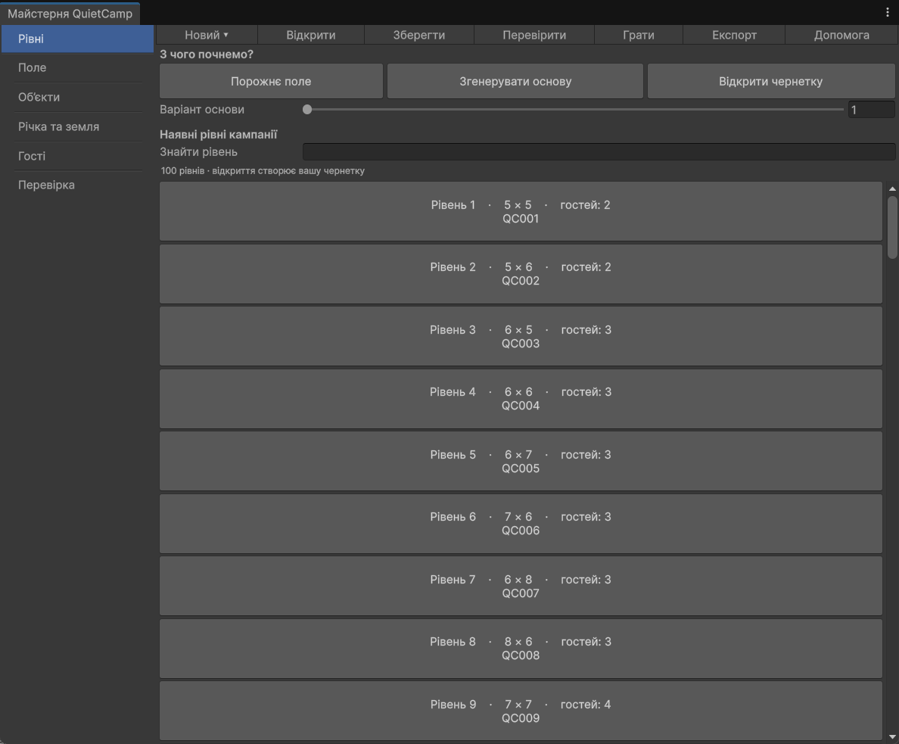
Натисніть картку рівня. Його розмір і кількість гостей показані перед відкриттям.
Оберіть Рівні зліва.
Знайдіть номер або ID у пошуку.
Натисніть картку. Майстерня відкриє чернетку цього рівня.
Початкова кампанія зміниться лише після окремої команди «Застосувати до рівня кампанії». Звичайне збереження записує вашу чернетку.
03
Складіть ігрове поле
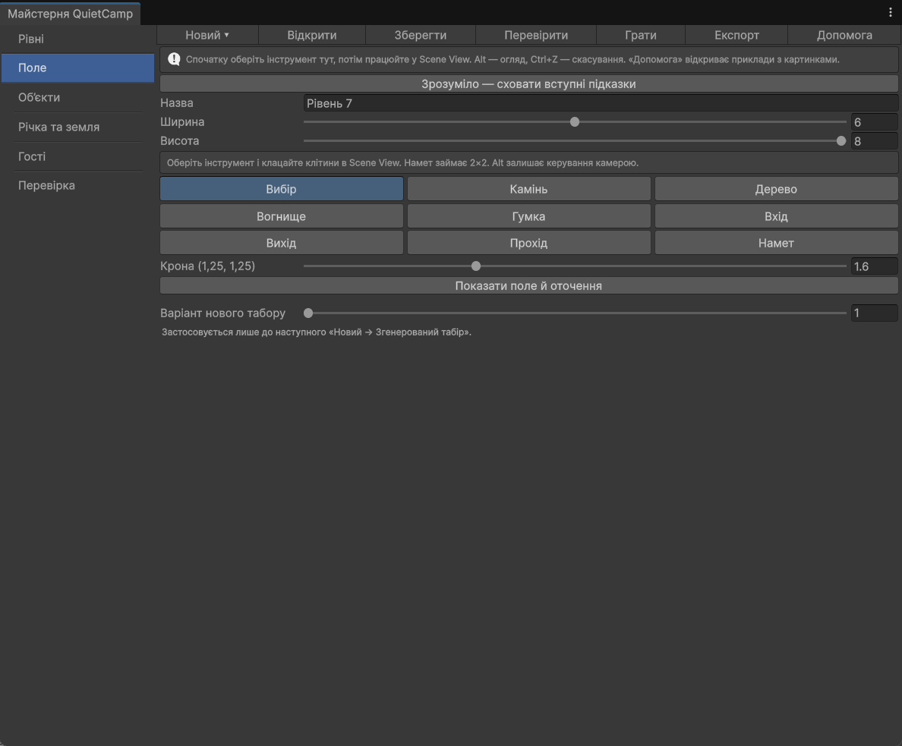
Оберіть інструмент у панелі, потім клацніть потрібну клітину у Scene View.
Задайте ширину й висоту: від 4 до 8 клітин.
Оберіть камінь, дерево чи вогнище та поставте їх на клітини.
Вхід і вихід ставте на межі поля. Основний вхід один; додаткові входи задаються окремо.
Зовнішні проходи малюйте до двох клітин поза полем. Гумка їх прибирає.
ТіньШумМаршрутПорушення
Ігрове дерево займає клітину й дає тінь. Декоративне дерево прикрашає оточення. Це різні інструменти.
04
Деталі, трава й паркани
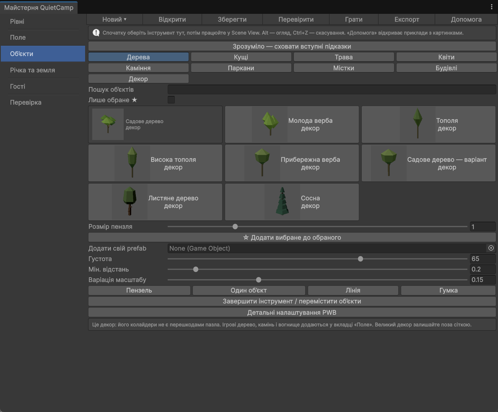
Обирайте модель за карткою. Зірочка зберігає її в обраному.
Один об’єкт
Для дерева, криниці, містка чи хати. Оберіть модель і клацніть поверхню.
Пензель
Для трави, квітів і кущів. Задайте розмір та густоту; протягніть по землі.
Лінія
Для паркану. Оберіть секцію й задайте лінію готовим інструментом PWB.
Знайдіть модель у категорії або через пошук.
Оберіть потрібний інструмент.
Малюйте у Scene View. Декор розміщується поза полем і водою.
Для звичайного переміщення натисніть «Завершити інструмент», оберіть об’єкт і використайте інструменти Unity.
Для живої зелені: невелика густота, більша відстань між рослинами й помірна варіація масштабу. Залишайте відкриті ділянки біля входів і важливих деталей.
Оберіть Трава й картку «Дрібна трава» або іншої рослини.
Почніть з розміру пензля 1, густоти 30, відстані 0,2 та варіації 0,15.
Натисніть Пензель, перейдіть у Scene View і протягніть по сухому берегу.
Для прорідження оберіть Гумка. Ctrl+Z скасовує мазок.
Приклад: скласти паркан
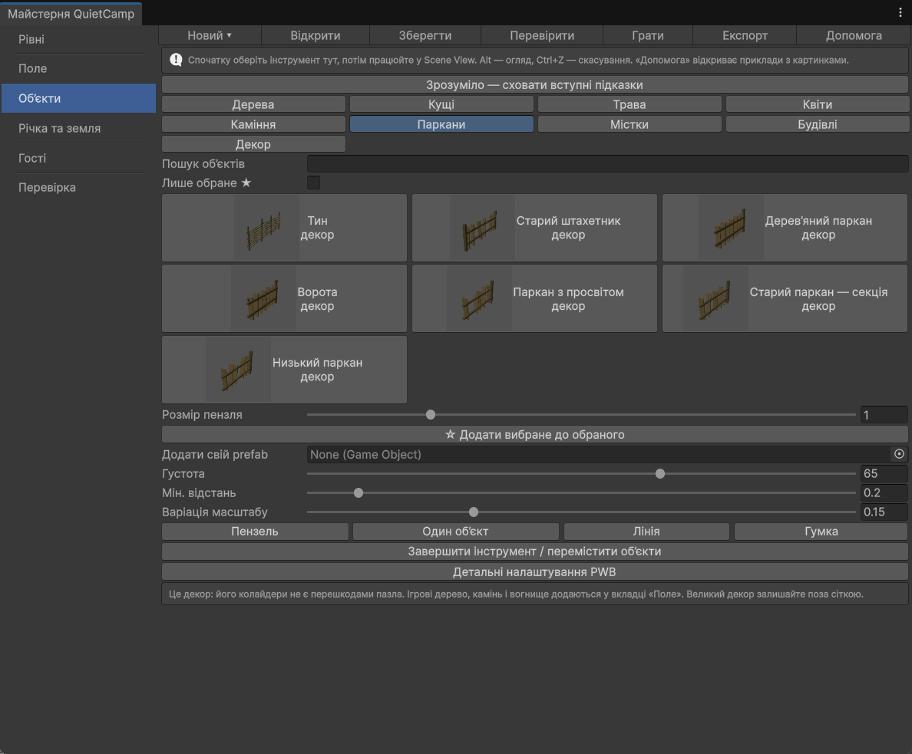
1 — «Паркани», 2 — секція, 3 — «Лінія».
Оберіть Паркани, потім тин або секцію штахетника.
Натисніть Лінія. У Scene View клацніть початок і кінець паркану.
Перевірте попередній перегляд і натисніть Enter, щоб поставити секції.
Натисніть Завершити інструмент для звичайного переміщення.
Як додати власний prefab?
Перетягніть його з Project у поле «Додати свій prefab». Він реєструється як декор зі стабільним ID. Не перетягуйте звичайний об’єкт із Hierarchy.
Як редагувати зелень старого процедурного рівня?
Його вже об’єднані генератором рослини відкриваються як групи. Для зміни окремої рослини замініть потрібну групу власними мазками. Нові мазки зберігають окремі об’єкти, які можна переміщувати й видаляти.
Чому відкрилася додаткова Palette?
Це штатне вікно Prefab World Builder. Закріпіть його поруч. Закриття Palette вимикає інструмент PWB; кнопка майстерні активує його повторно.
04+
Пропси та великі об’єкти
У вкладці Об’єкти відкрийте Пропси або Великі об’єкти. У добірці 24 дрібні речі, три зібрані орієнтири та п’ять окремих частин. Усі картки позначені як декор.
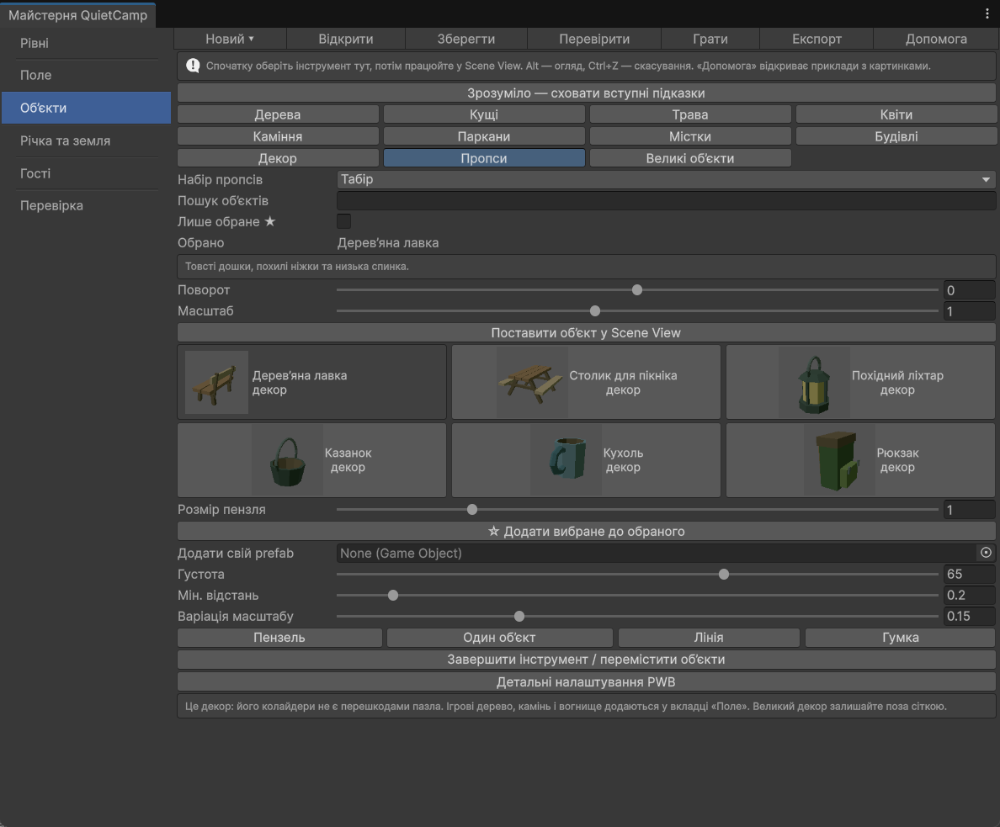
1 — категорія; 2 — набір; 3 — картка; 4 — поворот і масштаб; 5 — розміщення у Scene View.
Табір
Лавка, столик для пікніка, ліхтар, казанок, кухоль і рюкзак.
Сільський двір
Діжка, відро, тачка, кошик яблук, стіг сіна й драбина.
Берег
Човен, весло, мотузка, плетена пастка, рибальський кошик і причал.
Великі моделі розміщуються по одній. Увімкніть «Показати окремі частини», щоб скласти власний варіант.Показати всі моделі добірки
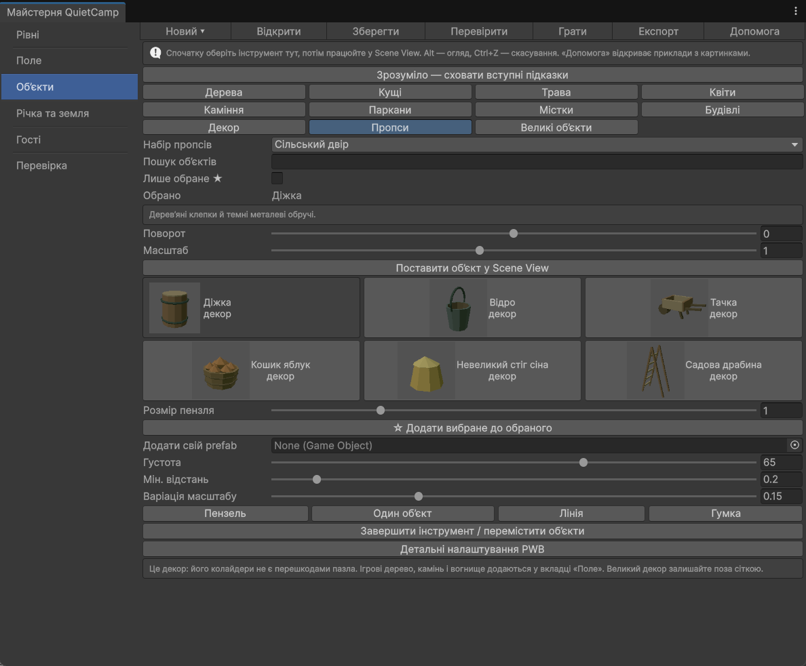
Сільський двір: дерево, сіно та плетені речі в спільній палітрі.
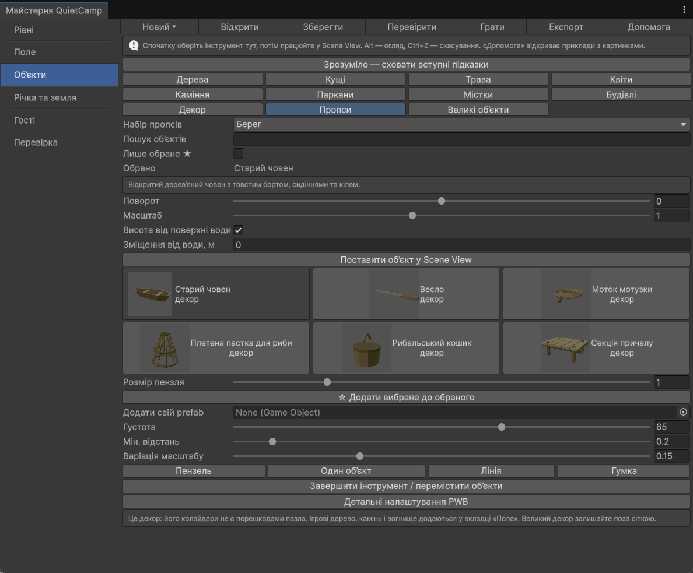
Берег: висота від води доступна для одиночного розміщення човна й причалу.
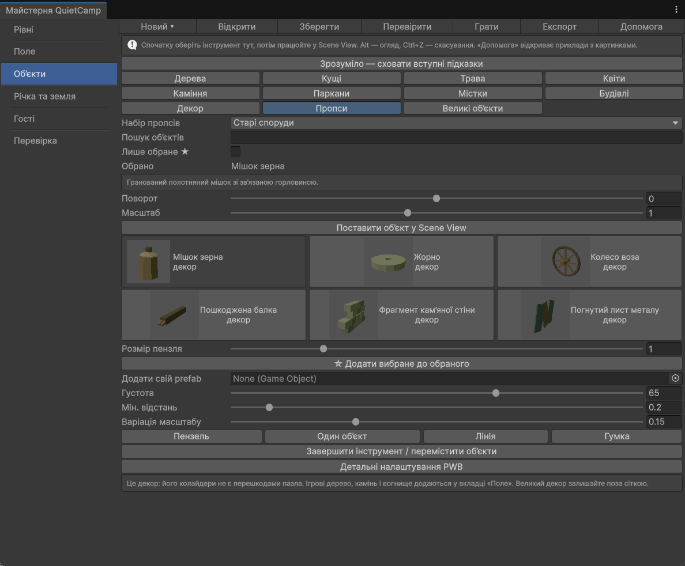
Старі споруди: доповнюйте великий орієнтир кількома пов’язаними деталями.
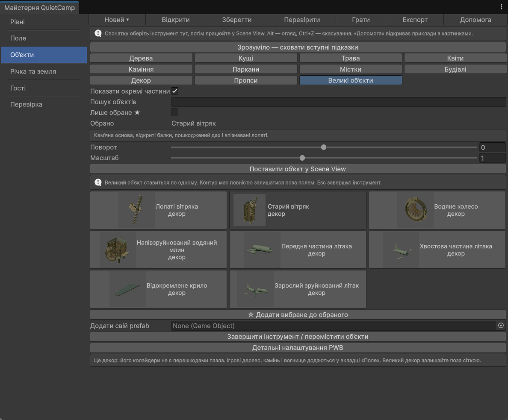
Окремі частини дозволяють змінювати форму руїн; зелень додавайте окремо.
Оберіть картку та натисніть Поставити об’єкт у Scene View.
Підведіть курсор до потрібного місця: зелений контур дозволяє розміщення, червоний означає перетин поля, помаранчевий попереджає про можливе перекриття клітин із камери.
Клацніть для розміщення. Esc завершує інструмент; Ctrl + Z скасовує дію.
Для човна, причалу та водяного колеса ввімкніть Висота від поверхні води. Зміщення задається в метрах. Висоту вже вибраного об’єкта також можна змінити в панелі.
Чернетка містить геометрію моделей і точні положення. Оновлення палітри не підміняє моделі вже відкритої чернетки. Експорт із літаком містить також ATTRIBUTION.md із зазначенням Poly by Google. Великі моделі, що перетинають поле, не пройдуть перевірку експорту.
05
Намалюйте вигин річки
Вода й земля використовують спільну криву. Точки керують руслом, параметри — його перерізом.
Відкрийте Річка та земля.
Для старого шаблону натисніть «Перейти до редагованої річки та землі».
Увімкніть «Точки у сцені» та перетягніть позначені точки у Scene View. Або задайте X/Z у панелі.
Кнопками + Точка і − Точка додайте або приберіть вигини.
Налаштуйте ширину води, глибину дна, ширину берега й м’якість переходу.
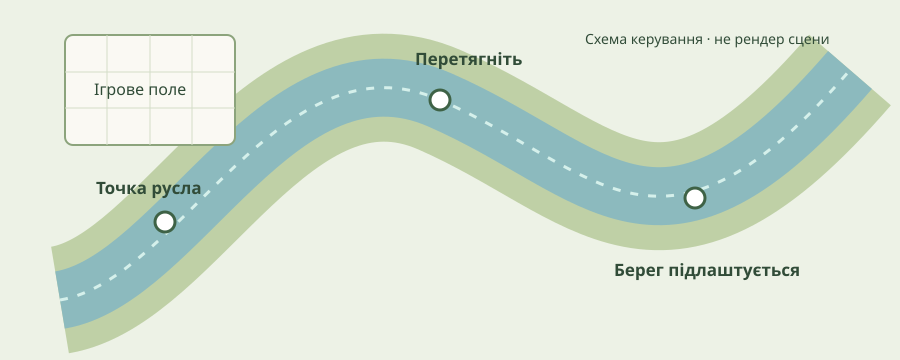
Схема роботи інструмента, а не рендер ігрового рівня.
Після завершення руху зачекайте оновлення землі. Під час цього етапу збереження й запуск можуть попросити зачекати. Річка не повинна перетинати ігрове поле.
06
Додайте об’єм землі
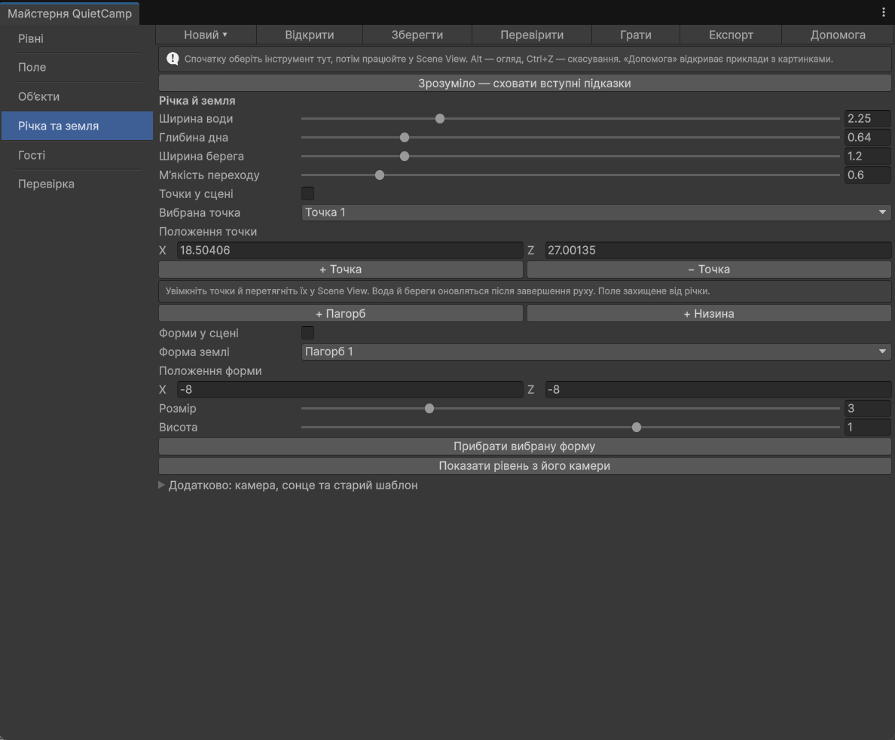
Кожна форма редагується окремо. Висота зі знаком мінус створює низину.
Натисніть + Пагорб або + Низина.
Оберіть форму зі списку.
Задайте положення X/Z, розмір і висоту.
Оцініть форму з камери рівня. Приберіть зайве кнопкою «Прибрати вибрану форму».
Почніть із широкого й невисокого пагорба. Ігрове поле залишається рівним. Рослини з прив’язкою до землі підлаштовуються під поверхню; вручну задана висота зберігається.
Камера, світло й розмиття
Розгорніть «Додатково». Тут можна змінити напрям сонця, нахил і масштаб камери та розмиття країв. Спочатку перевірте, чи всі потрібні об’єкти видно у кадрі.
07
Гості та умови перемоги
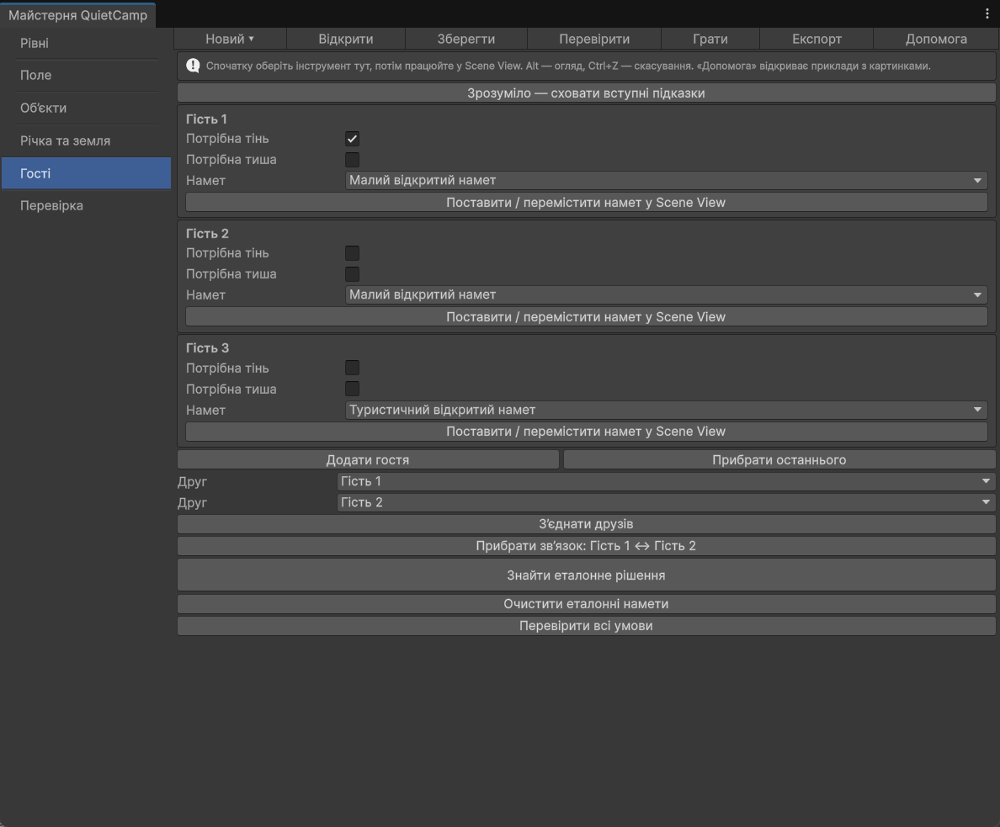
Намет займає 2×2 клітини. Важливі не лише місце, а й напрям дверей.
Залиште від 2 до 6 гостей й задайте потрібні намети.
Увімкніть вимоги тіні або тиші.
Для друзів оберіть двох різних гостей і натисніть «З’єднати друзів».
Поставте еталонні намети вручну або натисніть «Знайти рішення».
Перевірте доступ до дверей і кольорові маршрути.
Пошук можна скасувати. «Час вичерпано» означає, що пошук не завершився; це не доказ відсутності рішення.
08
Перевірте, зіграйте й збережіть
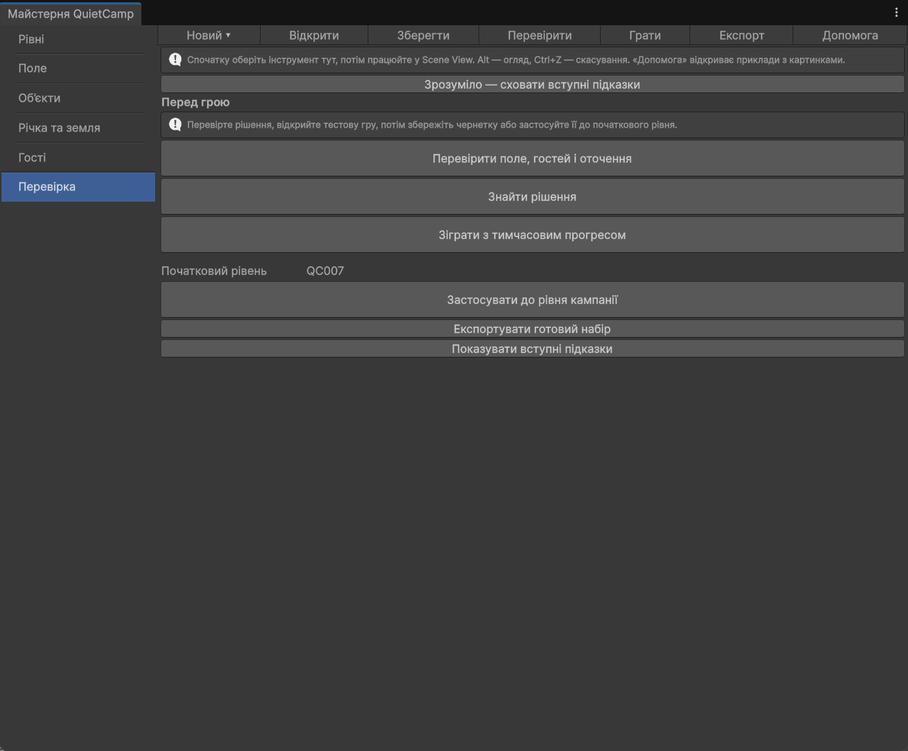
Тестова гра використовує тимчасовий прогрес. Після зупинки Play Mode повертаєтеся до майстерні.
Зберегти
JSON-чернетка для подальшого редагування. Відкривайте саме файл .draft.json.
Експорт
Перевірений пазл, зафіксована композиція та чернетка. Новий рівень ще не додається до меню кампанії.
Застосувати
Замінює початковий рівень після перевірки. Доступно для чернетки, відкритої з кампанії.
Натисніть «Перевірити» та усуньте повідомлення.
Натисніть «Грати». Перевірте намети, двері, тінь і тишу.
Зупиніть Play Mode у Unity.
Збережіть чернетку. За потреби експортуйте або застосуйте її до початкового рівня.
Якщо щось не виходить
Пензель не малює
Перейдіть в Scene View, оберіть картку моделі та натисніть інструмент ще раз. Малюйте на сухій землі поза полем. Перевірте, чи PWB завершив підключення.
Об’єкт стоїть не там або його не видно
Завершіть інструмент, оберіть об’єкт у Hierarchy й натисніть F у Scene View. Перевірте масштаб і положення. Потім поверніться до камери рівня.
Збереження просить зачекати
MicroVerse ще формує землю або River Modeler — геометрію. Дочекайтеся завершення оновлення та повторіть збереження.
Немає рішення або двері недоступні
Перевірте вхід, напрям дверей, перешкоди, зовнішні проходи й вимоги гостей. Червоні клітини показують порушення, маршрути — доступ.
Не можна застосувати чернетку
Потрібен перевірений пазл із рішенням та зв’язок із початковим рівнем. Якщо початковий файл змінився, збережіть чернетку й відкрийте актуальний рівень окремо.